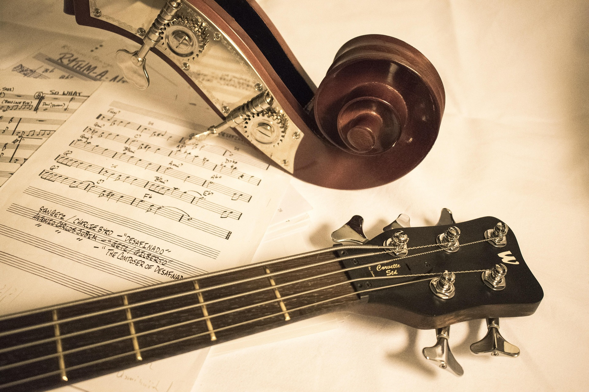

Fundação
O contra Baixo elétrico foi criado em 1951 pelo luthier Leo Fender, onde ele queria melhorar a praticidade do contra baixo, onde antes dele existia o baixo Acústico, que com o contra baixo elétrico, melhorou o som, a portabilidade dele e a precisão de afinação dele, mas, Leo teve outra ideia também que era atrair guitarristas, pois o contra baixo elétrico contem as 4 cordas de cima da guitarra, porém mais grave, permitindo que os guitarristas da época fizessem bicos e aprendendo a tocar facilmente da noite para o dia.